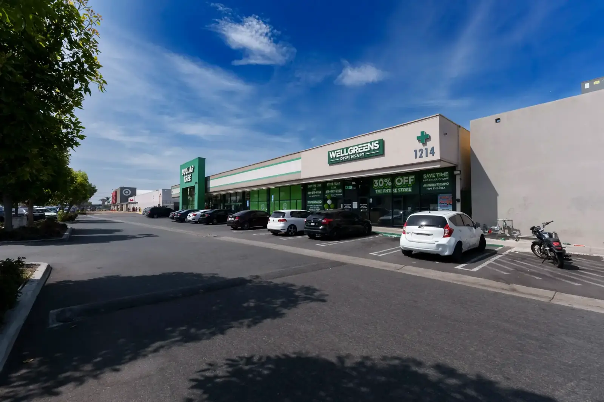

Sluggers Infused Pre-Rolls: What Makes Them Different?
September 2, 2026 · 13 min read

Regular pre-rolls keep things simple: ground cannabis flower, paper, filter, done.
Sluggers infused pre-rolls add a few more players to the lineup.
Sluggers is a Sacramento-based California cannabis brand launched in 2021 within Natura’s single-source production platform. The brand is particularly known for its baseball-inspired packaging and its “Juiced” infused pre-rolls, which combine cannabis flower with concentrated cannabis ingredients such as liquid diamonds and kief.
That combination is what separates them from standard flower-only joints.
It can also mean significantly higher cannabinoid potency than many conventional pre-rolls, making the product format especially important to understand before buying.
If you’re considering Sluggers at Wellgreens, don’t just choose based on the strain name or collectible packaging. Check the infusion type, total weight, cannabinoid content, strain, number of pre-rolls in the package, and your own experience with higher-potency cannabis products.
TLDR Quick Guide
Here’s the short version of Sluggers infused pre-rolls:
- Sluggers is a California cannabis brand founded in 2021.
- Its signature products include “Juiced” infused pre-rolls.
- These products combine cannabis flower with concentrates rather than using flower alone.
- Current Sluggers descriptions highlight liquid diamonds and kief as key infusion components.
- Wellgreens lists both individual infused pre-rolls and multi-pack formats.
- Five-packs commonly contain 0.7g pre-rolls for 3.5g total, although products can vary.
- Infused pre-rolls can be considerably more potent than ordinary flower-only joints.
- Strain and cannabinoid percentages vary by product and batch.
- Higher THC isn’t automatically the best choice for every consumer.
- Current flavors, strains, and inventory rotate, so check the menu before shopping.
Browse other Wellgreens cannabis brands or check in-stock cannabis products to compare what’s currently available.
Detailed Breakdown

What Exactly Is an Infused Pre-Roll?
A standard pre-roll is essentially ready-to-use cannabis flower rolled into paper.
An infused pre-roll adds concentrated cannabis material.
Depending on the producer, that could include:
- Hash
- Kief
- Distillate
- Live resin
- Rosin
- THCA-rich concentrates
- Liquid diamonds
- Other cannabis concentrates
Adding concentrate changes the product substantially.
The pre-roll can contain more cannabinoids per gram and may burn, taste, and handle differently from a conventional flower-only joint.
That’s why comparing Sluggers infused pre-rolls with regular pre-rolls isn’t exactly apples to apples.
It’s more like apples versus apples dipped in concentrate and rolled through another layer of cannabis.

How Are Sluggers Infused Pre-Rolls Made?
Sluggers’ signature “Juiced” format combines premium cannabis flower with concentrated cannabis components.
Wellgreens describes the brand’s current format as incorporating liquid diamonds and kief, while Sluggers’ own California product information also identifies its Juiced pre-rolls as infused with concentrated cannabinoid material and finished with additional concentrate or kief depending on the release.
The exact formulation can differ by product.
That’s why it’s important to read the package instead of assuming every Sluggers product contains an identical infusion.
What Are Liquid Diamonds?
“Liquid diamonds” is a cannabis concentrate term generally associated with highly concentrated cannabinoids derived from THCA-rich crystalline material that has been processed into a form suitable for products such as vapes and infused pre-rolls.
In simple terms, the ingredient adds concentrated cannabinoids beyond what naturally occurs in the flower alone.
That helps explain why infused products commonly test at higher cannabinoid percentages than standard pre-rolls.
But bigger numbers aren’t the only thing that matters.
Source material, strain, terpene profile, flower quality, concentrate quality, and overall formulation all contribute to the finished product.

What Is Kief?
Kief is much easier to visualize.
Look closely at a cannabis flower and you’ll see tiny resinous structures called trichomes.
When those trichomes separate from the plant material, the resulting powdery material is commonly called kief.
Kief contains concentrated cannabinoids and aromatic compounds, which is why cannabis producers have long used it to add strength and flavor to flower products.
In Sluggers infused pre-rolls, kief helps differentiate the product from a straightforward flower-only joint.
Why Combine Flower and Concentrate?
Infusion allows producers to create a different product category rather than simply rolling more flower.
Potential differences include:
- Higher cannabinoid concentration
- More concentrated cannabis flavor
- Different burn characteristics
- A stronger overall product
- Different terpene profiles
- Greater variation between formulations
This doesn’t make infused pre-rolls objectively superior.
It makes them more concentrated.
Some shoppers specifically want that.
Others may be happier with traditional flower-only products.

Sluggers Uses a Single-Source Production Model
Another part of Sluggers’ positioning is its connection to Natura’s vertically integrated cannabis operation in Sacramento.
Wellgreens describes the production system as controlling the process from nursery and cultivation through extraction and packaging.
That kind of vertical control can give a producer more oversight over:
- Genetics
- Cultivation
- Harvest
- Extraction
- Product formulation
- Packaging
For shoppers, it means the brand isn’t simply purchasing finished components from unrelated companies and putting them into a collectible tin.
What’s With the Baseball Theme?
Sluggers isn’t exactly shy about its branding.
Everything from the name to the packaging leans into baseball.
The brand extends that concept further by including strain-specific collectible trading cards with certain products, particularly its signature multi-pack offerings.
Does a trading card change the cannabis?
Obviously not.
But it gives the product a recognizable identity in a dispensary category where dozens of pre-roll packages can otherwise start looking remarkably similar.

What Sizes Do Sluggers Infused Pre-Rolls Come In?
Current Wellgreens inventory includes both single pre-rolls and multi-pack options.
A signature Sluggers format is the five-pack of 0.7g infused pre-rolls, giving the package a total of 3.5 grams.
Wellgreens also lists individual 0.7g infused pre-rolls among rotating products.
Product sizes can change, though.
Always verify:
- Number of pre-rolls
- Weight per pre-roll
- Total package weight
before comparing prices.
Why Total Weight Matters
Suppose one package costs more than another.
That doesn’t necessarily mean it’s worse value.
One may contain:
- Five smaller pre-rolls
- Two larger pre-rolls
- One oversized infused joint
Comparing only package price can therefore be misleading.
A more useful calculation is:
Price ÷ total grams = approximate price per gram
Then consider whether the infusion, flower, strain, and product format justify the difference for you.

Are Sluggers Infused Pre-Rolls Strong?
Infused pre-rolls are generally positioned as higher-potency products because they combine flower with cannabis concentrates.
Individual Sluggers products can vary substantially in cannabinoid content depending on strain, batch, flower, and infusion.
Don’t rely on one THC percentage you saw online and assume every package is identical.
Check the current label.
That matters particularly if you’re accustomed to conventional flower rather than concentrates.
Higher THC Isn’t Automatically Better
Cannabis menus can turn potency shopping into a scoreboard.
27%.
33%.
42%.
Suddenly everyone is scouting numbers instead of products.
Cannabinoid percentage is useful information, but it doesn’t tell you everything about:
- Flower quality
- Terpenes
- Aroma
- Flavor
- Freshness
- Burn quality
- Product construction
- Your personal tolerance
The product with the highest THC percentage isn’t automatically the best Sluggers infused pre-roll for you.

Your Experience Level Matters
Infused pre-rolls may be significantly more potent than the flower products some consumers are accustomed to.
If you have limited experience with cannabis or typically use lower-potency flower, that distinction matters.
Wellgreens’ guide on how to choose pre-rolls that match your experience level provides a useful framework for comparing standard and infused products.
The important point is simple:
Don’t treat every pre-roll as equivalent just because it’s already rolled.
A small infused joint can contain a substantially different cannabinoid load than a larger flower-only pre-roll.
Strain Still Matters
Infusion doesn’t erase the cannabis genetics underneath it.
Current Wellgreens listings for Sluggers have included strains such as:
- Runtz
- Lemon Cherry Gelato
- Jack Herer
- Bubble Bath
- Rose
- Baby Griselda
- Iced Marshmellowz
Availability changes, so don’t treat that as a permanent menu.
Instead, use the strain name as one part of your comparison.

What Should You Look for in a Strain?
Check available descriptions for characteristics such as:
- Genetics
- Aroma
- Terpene profile
- Cannabinoid percentage
- Broad category labeling
- Current batch information
A sweet, fruit-forward cultivar can be dramatically different from one built around earthy, citrus, pine, or fuel-heavy aromas.
If flavor matters to you, the word infused isn’t enough information.
Indica, Sativa, or Hybrid?
You’ll commonly see Sluggers products categorized as indica, sativa, or hybrid.
Those labels provide familiar shorthand but shouldn’t be treated as guarantees of one exact experience.
Modern cannabis genetics are highly hybridized, and individual response to THC and other cannabis compounds varies.
Consider the category alongside:
- Strain
- Cannabinoid content
- Terpene information
- Your experience
- Your tolerance
That’s more useful than treating “indica” and “sativa” as rigid promises.

Does Infusion Change the Flavor?
It can.
You’re combining multiple cannabis components:
flower + concentrate + kief
Each can contribute aromatic compounds.
The result may therefore taste more concentrated or different from smoking the same flower without infusion.
That doesn’t mean every infused pre-roll will taste dramatically stronger.
Manufacturing quality, freshness, strain, storage, and formulation still matter.
Don’t Ignore Freshness
Pre-rolls can lose aromatic quality over time, particularly when exposed to poor storage conditions.
Look at available package information and make sure the product has been stored appropriately.
Excessive heat and prolonged exposure can affect cannabis products.
Buying through a licensed dispensary also provides a regulated retail environment rather than gambling on products from unknown sources.

Infused Pre-Rolls vs Regular Pre-Rolls
The easiest comparison looks like this:
FeatureRegular Pre-RollSluggers Infused Pre-RollCannabis flowerYesYesAdded concentrateUsually noYesKief infusionUsually noOften part of the formatTypical potencyGenerally lowerGenerally higherComplexitySimple flower productFlower + concentrateBest suited forBroad range of experienced adult consumers depending on potencyConsumers specifically seeking infused, higher-potency formats
The actual cannabinoid content varies, so this isn’t a substitute for reading the label.
It’s a category comparison.
Sluggers vs Other Infused Pre-Rolls
Sluggers isn’t the only California brand making infused products.
The category includes many competing approaches using:
- Liquid diamonds
- Distillate
- Hash
- Rosin
- Live resin
- Kief
- Combinations of multiple concentrates
So what makes Sluggers recognizable?
The combination of:
- Single-source production
- Juiced liquid-diamond format
- Kief infusion
- Baseball branding
- Collectible packaging
- Rotating strains
If you’re comparing brands, Wellgreens’ guide to the best weed pre-rolls in San Diego gives additional context on the broader category.

Single Pre-Roll or Five-Pack?
This is partly a convenience decision.
A Single May Make Sense If:
- You’re trying the brand for the first time.
- You’re unfamiliar with the strain.
- You don’t want to commit to a full multipack.
- You want to compare several products.
A Five-Pack May Make Sense If:
- You already know you like the strain.
- You prefer smaller individual sessions over one larger joint.
- You value multipack convenience.
- The price per gram makes sense compared with singles.
Neither format automatically offers better value.
Check current pricing.
Don’t Buy Infused Pre-Rolls Based on Packaging Alone
Sluggers’ baseball-card aesthetic is designed to stand out.
It works.
But packaging isn’t cannabis quality.
Before buying, check the boring-but-important details:
- Licensed manufacturer
- Product weight
- THC content
- Other cannabinoids
- Strain
- Required California labeling
- Package information
- Testing information
The collectible card is dessert.
The label is dinner.
Why Licensed Retail Matters
Popular cannabis products can attract counterfeit packaging.
Buying from a licensed retailer gives consumers access to regulated products subject to California cannabis testing, labeling, and packaging requirements.
Avoid mysterious products from:
- Social media sellers
- Unlicensed delivery services
- Unverified websites
- Informal marketplaces
A recognizable Sluggers logo doesn’t establish authenticity by itself.
Source matters.

Store Infused Pre-Rolls Properly
Once you bring the product home, storage can affect quality.
Follow the package or manufacturer instructions and generally avoid:
- Excessive heat
- Moisture
- Direct sunlight
- Crushing the pre-rolls
- Leaving packages open unnecessarily
Keep all cannabis products securely away from children and pets.
The collectible baseball look should not mean the package gets stored with actual children’s collectibles.
Don’t Drive While Impaired
Sluggers infused pre-rolls contain THC and may be highly intoxicating.
Do not drive or operate machinery while impaired.
Because these are infused products, consumers accustomed only to standard flower should pay particular attention to the labeled potency.
Plan transportation before consuming, not after determining that your plans were optimistic.

How to Compare Two Sluggers Products
If two products look good, use this checklist.
Compare the Strains
Which genetics and aroma profile appeal more?
Compare Cannabinoid Content
Is one substantially more potent than the other?
Compare Package Size
Single or five-pack?
Compare Total Weight
How many grams are actually included?
Compare Freshness
Review available packaging information.
Compare Price
Calculate approximate price per gram if useful.
Consider Your Experience
Are you comfortable with an infused product at that potency?
That’s a more useful comparison than choosing whichever package has the coolest trading card.
How to Find Sluggers at Wellgreens
Wellgreens currently has a dedicated Sluggers page highlighting the brand and its rotating product selection.
Because specific strains can sell through, checking in-stock cannabis products before visiting is useful.
You can also explore the broader selection of Wellgreens cannabis brands if you want to compare Sluggers with other infused pre-roll producers.
Inventory is a living thing.
Yesterday’s strain isn’t guaranteed to be today’s strain.

Can Sluggers Be Delivered?
Eligible adult customers within supported service areas can review Wellgreens Delivery for current cannabis ordering options.
Availability can depend on both address and inventory.
If you’re looking for one specific Sluggers strain or pack, check the current delivery menu rather than assuming every store product can be sent to every location.
Are Sluggers Infused Pre-Rolls Worth Trying?
They make the most sense for consumers specifically interested in infused cannabis pre-rolls rather than simple flower-only joints.
The combination of cannabis flower, concentrated cannabinoid ingredients, kief, recognizable branding, and multipack formats gives Sluggers a distinct position within the category.
But more concentrated isn’t automatically more appropriate.
If you prefer lower-potency flower or have limited cannabis experience, a conventional pre-roll may be the better place to start.
The smartest choice is the product that matches your tolerance and preferences, not the one that wins the THC scoreboard.

Key Takeaways
- Sluggers infused pre-rolls combine cannabis flower with concentrates. Their signature Juiced format uses components such as liquid diamonds and kief.
- They’re different from ordinary flower-only pre-rolls. Infusion can substantially increase cannabinoid concentration.
- Sluggers uses a single-source production model. Wellgreens describes the brand’s Natura-based operation as controlling cultivation through extraction and packaging.
- Five-packs are a signature format. Current products commonly include five 0.7g infused pre-rolls totaling 3.5g.
- Single infused pre-rolls are also available. The best format depends on whether you’re sampling or buying a product you already know.
- Strain still matters. Infusion doesn’t erase genetics, aroma, or terpene differences between cultivars.
- Don’t choose using THC alone. Freshness, strain, formulation, flower quality, and your tolerance also deserve consideration.
- Infused products may not be ideal for inexperienced consumers. Compare potency with products you already know before choosing.
- Buy from licensed cannabis retailers. Regulated sourcing and required product labeling matter with higher-potency cannabis products.
- Check current inventory before visiting. Browse Wellgreens Dispensary to see which Sluggers infused pre-rolls and other cannabis products are currently available.
FAQs
01What are Sluggers infused pre-rolls infused with?
Sluggers’ signature Juiced pre-rolls combine cannabis flower with concentrated cannabis ingredients, with current product descriptions highlighting liquid diamonds and kief. The exact formulation can vary between products and releases, so check the specific package before buying. Infusion generally gives these products greater cannabinoid concentration than conventional flower-only pre-rolls.
02Are Sluggers infused pre-rolls stronger than regular pre-rolls?
Infused pre-rolls are generally more potent because concentrates are added to the cannabis flower. Actual THC and total cannabinoid levels vary by strain and batch, so the current product label is more useful than a percentage quoted online. Consumers with limited experience using concentrated cannabis products should pay particular attention to potency before choosing.
03How many pre-rolls come in a Sluggers pack?
One of Sluggers’ signature formats contains five 0.7g infused pre-rolls for 3.5 grams total. Wellgreens also carries rotating single Sluggers infused pre-rolls, so not every product comes in the same package size. Check both quantity and total weight when comparing products and prices.
04How should I choose a Sluggers infused pre-roll strain?
Compare the strain genetics, aroma description, cannabinoid content, broad indica/sativa/hybrid classification, and your previous cannabis preferences. Don’t choose exclusively by THC percentage because higher potency doesn’t guarantee better flavor or a better match for your tolerance. If you’re new to infused products, also consider whether a lower-potency or non-infused pre-roll would better match your experience level.
05Where can I buy Sluggers infused pre-rolls in San Diego?
Wellgreens currently carries Sluggers products across its San Diego-area cannabis selection, although individual strains and formats rotate with inventory. Checking the current menu before visiting is the best way to confirm whether a specific single or five-pack is available. Eligible adults within supported areas can also review Wellgreens’ delivery options for current Sluggers availability.
Shop this guide
Keep reading

Why Is Your Cake Disposable Vape Not Hitting and What Should You Check?
You pick up your Cake disposable vape, take a draw, and… nothing. No vapor, no response, just a device that seems to have called it quits…

Cannabiotix Flower vs Concentrates: Which Product Type Fits Your Needs?
If you’re comparing Cannabiotix flower vs concentrates, you’ve probably noticed that both categories offer distinct characteristics, from…

Live Rosin vs Live Resin: Which Concentrate Should You Choose?
Two cannabis concentrates. Similar names. Very different production methods. If you’ve been comparing live rosin vs…
Ready to Start?
Premium cannabis. Expert guidance. Fast pickup. Join thousands of San Diegans who trust Wellgreens.